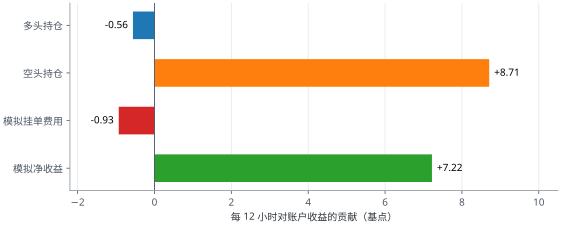
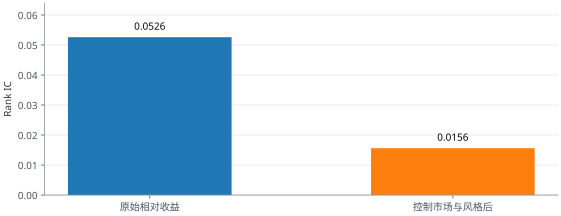

这套策略怎样通过预测寻找收益？
想靠主动交易赚钱，首先要对未来做出有用的预测。我们尝试从过去的行情中找线索，判断未来 12 小时的价格表现，再据此决定交易什么。预测不必每次都对，但长期带来的收益要足以覆盖判断错误和交易费用。
1. 为什么后来不只预测一个币？
我们最初选一个币，利用价格和成交等信息预测它接下来会涨还是跌。这是最直接的交易办法。但币价常常跟着整个市场一起变动，也会受这个币自身的突发消息影响。即使找到一点有用的线索，也容易被这些变化盖过去。测试下来，单币涨跌很难稳定预测，能带来的收益也较小。
后来我们换了一个问题：与其猜一个币会不会涨，不如判断哪些币会比其他币表现更好。例如，同一段时间 A 跌了 6%，B 跌了 14%。虽然两个币都跌了，A 仍然比 B 强；如果事先做多 A、做空 B，两边合计可能获利，当然还要扣除交易费用。
只比较两个币，结果仍可能被其中一个币的意外涨跌左右。所以我们让模型同时比较一组币，通常从中选 6 个做多、6 个做空。把判断分散到多个币上，是为了让单个币的偶然变化不至于决定整个结果。
这种方法只有在模型确实能分辨强弱时才有用。两边的目标金额虽然接近，也不能完全抵消市场影响；最终还要看真实交易的合计收益能否覆盖费用。
2. 一笔多空交易怎样赚钱？
“做多”在价格上涨时获利，“做空”在价格下跌时获利。组合看的是两边持仓盈亏的合计，不要求做多的币一定上涨。
以主账户为例：假设账户有 100 USDT，按目标仓位拿 45 USDT 做多、45 USDT 做空。12 小时后，如果被做多的币平均跌 2%，多头亏 0.90 USDT；被做空的币平均跌 5%，空头赚 2.25 USDT。两边合计毛赚 1.35 USDT，再减去费用，才是账户净收益。
反过来，如果被做多的币涨 5%，被做空的币涨 2%，多头赚 2.25 USDT、空头亏 0.90 USDT，合计同样毛赚 1.35 USDT。所以利润既可能主要来自多头，也可能主要来自空头。这里比较的是持仓盈亏；“被做空的币涨得更多”则会伤害空头，并非空头获利。
更常见的差距没有例子中那么大。如果两组币价仅相差 0.10 个百分点，这个 45 USDT 多、45 USDT 空的组合每 100 USDT 权益只产生约 0.045 USDT 毛收益；净费用超过它，仍会亏损。
自己试一组涨跌幅
数字是未来 12 小时两组币本身的价格变化；结果按每 100 USDT 账户权益计算。净费用填负数表示资金费净收入超过其他费用。
如果事前根本无法分辨哪些币未来更强、哪些更弱，那么长期平均的两边价格差接近零；付完费用后，策略反而会亏。这是评价模型时必须跨过的第一道门槛。
3. 每次交易是怎样做出的？
策略在一份事先确定的 60 个 OKX USDT 永续合约名单中工作。“永续合约”让账户既能做多，也能做空，但也带来资金费和杠杆风险。每次决策只读取已经走完的 4 小时行情，不使用当时还不知道的未来价格。
- 看过去。把价格趋势、短期反转、波动和成交活跃度等 26 项数据整理成特征。
- 给 60 个币打分。模型估计未来 12 小时谁可能相对更强、谁可能相对更弱。分数只表示排序，不是“赚钱概率”。
- 形成目标组合。通常选分数最高的 6 个做多、最低的 6 个做空。原有持仓如果仍在同侧前 18 名，会优先保留，以减少频繁换仓。
- 下单并核对。使用只挂在订单簿上的 Maker 委托；只有实际成交后才算持仓。未成交、最小下单数量等原因，都可能使真实持仓暂时不是 6 多 6 空。
同一过程写成流程伪代码如下；函数名用于解释，不代表实际下单程序：
# 只使用决策时已经完成的行情
bars = completed_bars("4h", universe=60)
features = causal_features(bars, count=26)
scores = model.predict(features)
longs, shorts = rank(scores, top=6, bottom=6)
orders = maker_rebalance(longs, shorts)
positions = confirm_fills(orders) # 以真实成交为准主账户：Week33 版本
用两个 LightGBM 树模型分别寻找未来相对表现可能排在前端和后端的币，再把两个结果合成排序分数。目标是 6 多、6 空，每个仓位的目标规模约为账户权益的 7.5%，合计约 90%；两边各约 45%。这里说的“规模”是按市价计算的仓位金额。
子账户：Week47 ListFold 版本
使用另一种神经网络学习排序，并在原有 4 小时特征之外加入由已完成的 1 小时行情近似构建的成交额柱特征。选币方法同样是 6 多、6 空，但目标总名义金额为账户权益的 4.5 倍，属于高杠杆版本。盈利和亏损都可能被放大。下文引用的 Week42 历史研究属于上一版本，不能直接当成当前 Week47 的收益证据。“Week33”“Week47”只是项目内部的版本名。
4. 为什么模型可能分得出强弱？
组合能分散噪声，前提仍是特征本身对未来的相对强弱有预测力。模型用历史价格与成交数据给币排序，再检验高分币和低分币之后 12 小时的表现是否真的有差异。
可能留下差异的原因有几个：新消息与资金需求可能被市场逐步吸收，让相对强势延续；短时间的大量买卖可能把价格推得过头，随后回落或反弹；不同币的波动和市场敏感度也不一样。模型用历史价格与成交数据寻找这些状态，再看它们是否对应之后 12 小时的不同表现。
这些只是可检验的解释。目前还不能说这套模型已经找到了哪一种稳定机制。也可能只是它更常做空市场下跌时跌得更快的币，因此在特定行情里显得赚钱。
5. 这套规则是怎样形成的？
- 发现单币方向策略的弱点。涨跌难以稳定预测，微小优势也容易被手续费吃掉。
- 改为比较同一时刻的币。用多空组合减弱共同市场波动，并用多个持仓分散单币噪声。早期实验看到一些正的预测信号，但新币、空头表现和交易门槛都存在问题，不能直接上线。
- 把研究收束为能执行的规则。固定交易名单、只用已经完成的行情、设定 12 小时目标、限制仓位，并在历史数据中模拟交易费用。
- 形成现在的两个版本。主账户使用双模型排序，子账户使用另一种神经网络。它们都经历了历史比较，但模型曾反复使用同一批历史数据，后续仍需新时段验证。
6. 目前看到什么效果？
主账户版本在 1,148 个历史决策时点的模拟中，按预设 Maker 手续费扣费后，平均每 12 小时约赚 0.0722% 的账户权益，也就是每 100 USDT 约 0.0722 USDT。模拟尚未完整计入逐币资金费、真实滑点与 Maker 未成交。这是历史平均数，不是实盘每 12 小时都会赚这么多，更不能直接推算未来年收益。

这张图也提醒我们：历史收益主要来自空头，而且这个组合在所研究的下跌行情里更有利。多空金额相等，不代表它对整个市场涨跌完全不敏感。若市场环境改变，结果可能不同。
子账户模型在历史模拟中的平均值也为正，但删除表现最好的 5% 时点后，平均值变为负数。主账户早期模型比较也没有通过全部预先设定的筛选条件。所以目前的证据支持继续研究，尚不能证明稳定盈利。
想看更细的预测与风险指标
主账户模型分数与未来相对收益的原始 Rank IC 为 0.0526；控制市场敏感度、波动、动量和成交额等因素后为 0.0156。Rank IC 衡量的是排序关联，不是账户收益。

主账户历史组合的市场敏感度（Beta）估计为 −0.145；按这个估计值把多空权重调到近似中性后，同样历史中的模拟净收益从每期 7.22 bp 降至 4.67 bp。这说明部分历史表现与市场方向和选中币的风险特征有关，不能全部归功于独立的选币能力。
7. 看这套策略还要注意什么？
- 预测会失效：过去能区分币的规律，可能在新的市场中消失或反转。
- 多空不等于没有方向风险：两边币对市场涨跌的敏感度可能不同，组合仍可能在某些行情中集中亏损。
- 模拟成交不等于真实成交：资金费、滑点和 Maker 挂单未成交都可能吃掉收益。
- 子账户杠杆更高：价格小幅变化就可能造成明显的权益波动，需要单独看待。
下一步最有说服力的检验，是在没有参与模型选择的新时段，持续核对交易所的真实成交、两边各自盈亏、全部费用与市场风险。如果真实的两腿合计收益不能长期覆盖这些成本，这个策略就没有可持续的净优势。
延伸阅读与研究资料
- 本项目技术说明；主账户研究；子账户研究；风险归因核查。
- Markowitz，Portfolio Selection：组合分散与资产相关性；Grinold，The Fundamental Law of Active Management：预测能力与相对独立的投资机会。
- Liu、Tsyvinski、Wu，Common Risk Factors in Cryptocurrency：加密资产横截面与多空组合；Gu、Kelly、Xiu，Empirical Asset Pricing via Machine Learning；Cakici 等的加密资产研究。这些研究提供方法与线索，不能直接证明本策略的未来收益。